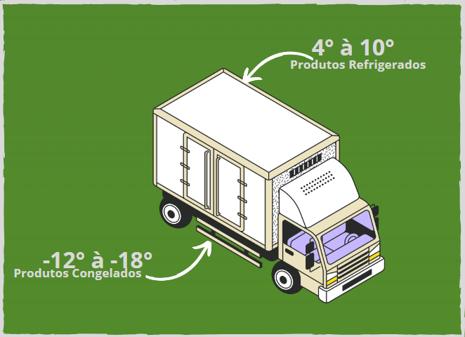

A Contribuição da Produção Rural
A produção Rural desempenha uma grande função na Segurança alimentar das cidades, abastecendo
com uma grande quantidade de alimentos diversificados e essenciais. Logo abaixo irei citar os
diferentes tipos de alimentos que são trazidos por meio da produção rural:
-
Produção de Grãos: Os tipos de grãos são fundamentais para a nossa alimentação, entre elas podemos citar ,
o trigo, arroz, milho e outros cereais. Com tudo isso que a produção rural fornece,
se torna mais
diversificada na produção de alimentos, tais como os pães, massas e até rações para animais.
A produção mundial de cereais em 2021/2022 foi estimada em cerca de 2,8 bilhões de toneladas, com destaque para o milho
(1,2 bilhões de toneladas), trigo (772 milhões de toneladas) e arroz (512 milhões de toneladas) como os principais grãos produzidos.
Esses grãos foram essenciais para alimentar populações urbanas ao redor do mundo
-
Frutas e Vegetais: Esses alimentos são estritamente importantes, pois eles carregam em si uma grande quantidade de
vitaminas, minerais e fibras para nossa dieta.
A produção de frutas e vegetais proporcionam uma variedade enorme de alimentos frescos e saudáveis.
Com esses alimentos eles nos proporcionam um prato mais balanciado e melhorando ainda mais a saúde de uma população.
A produção global de frutas e vegetais continua a aumentar, com a China, Índia e Brasil sendo grandes produtores.
Por exemplo, a China é o maior produtor mundial de frutas e vegetais, com milhões de toneladas produzidas anualmente.
-
Produtos Animais: Nesse tipo podemos incluir carnes, ovos,
leites e derivados, que eles em si são ricos em proteínas e outros
diversos nutrientes, que são essencias para nossa vida humana.
A produção de carne bovina, suína e de aves também é significativa, com os Estados Unidos, Brasil e China sendo os maiores produtores.
Em 2021, a produção global de carne de frango foi de aproximadamente 98 milhões de toneladas.
Infraestrutura e Logística
A infraestrutura é uma parte muito importante para a conexão entre o meio da produção rural e as cidades urbanas.
Elas irão garantir a entrega eficiente e com segurança de alimentos. Logo abaixo temos alguns exemplos de quais meios
são usados para que esses produtos cheguem aos consumidores.
-
Rodoviária: Esse meio é o mais utilizado para tranporte de alimentos frescos, especialmente quando a
infraestrutura da cidade é bem desenvolvida.
Normalmente o tranporte é feito por caminhões refrigerados. Eles são usados especialmente para que o produto
não estrage durante o transporte do alimento.

-
Ferroviário: Em alguns lugares o transporte de alimentos por meio ferroviário, geralmente são utilizados para o
transporte de grãos e grandes quantidades de alimentos.
Trens geralmente são os mais utilizados, pois eles conseguem transportar maiores quantidades.
Logistica integrada
Empresas de logística especializadas movem o transporte e armazenamento dos alimentos, garantindo que tenha uma cadeia de suprimento contínua e eficiente.
Isso envolve planejamento cuidadoso para evitar desperdícios e garantir a entrega oportuna dos alimentos.
Sustentabilidade
Práticas agrícolas, são essenciais para que possamos ter uma produção mais eficiente e sustentável.
Logo abaixo temos alguns tipos de formas de práticas importantes:
-
Cultura: Mudar algumas culturas pode ser preciso, pois
com isso ajuda a melhora da fertilização do solo,
reduzir a erosão e controlar pragas e doenças.
Isso também diversifica a produção agrícola,
aumentando a estabilidade e a resiliência do sistema.
-
Uso da Água: Tecnologias como a irrigação ajuda a
melhorar o uso da água, dimunuindo o desperdício de água.
E assim ajudando na melhora de uma irrigação mais eficiente.
-
Energias Renováveis: A utilização de uma energia renovável
como a energia solar ou eólica, reduz a utilização de combustíveis
fósseis e assim diminuindo a emissão de gás carbônico.